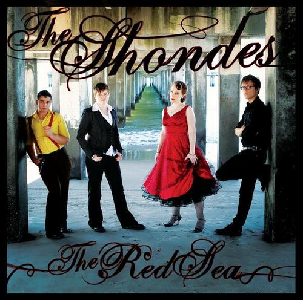

can you read some more basic modcloth femmes pls?
staying in the queer pop music idiom:

i always thought it was something of a carry to pick this title for this album because it really does leave the door wide open for pitchfork douchebros to make so many #MensesCore jokes #boldchoices